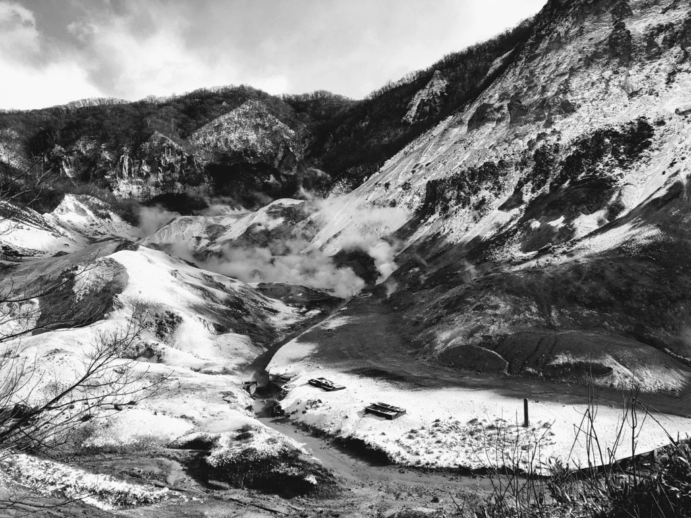
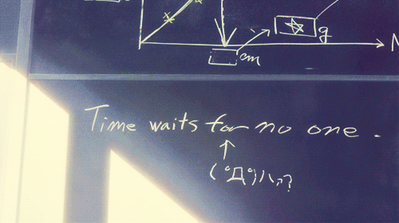

Bio
Hello, I'm Kate.
I'm currently a software engineer at Checkr.
☆
Change is my friend, and so is curiousity.
I love to make, un-make, and re-make things.
I'm happiest when I'm figuring out how stuff fits together — in the real world and in the shell!
Fun Facts:
I'm a dog mom!
This is Natto — he's a very good boy:

The most stunning place I've visited so far is Hell Valley in Hokkaido.
It's also where I took my favorite photo:

My favorite phrase is from "The Girl Who Leapt Through Time":
